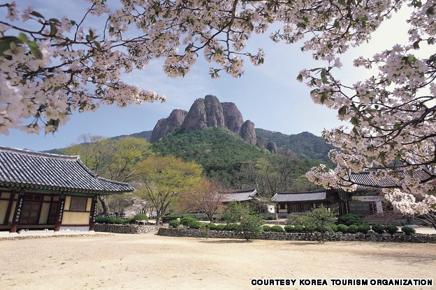

Grant me the serenity to accept things that I cannot change;
The courage to change what I can;
And the wisdom to know the difference.
Over the years, I have visited many cities and several countries. I love to travel. One of my favorite places that I visited was South Korea. It is a beautiful country with lots of scenery. The trick is to get out of Seoul. Although, the city of Seoul has a lot to offer, it is a metropolitan area. Therefore, it has everything one would expect to see in a major city.
When you leave Seoul, the entire perception of the country will change. I was fortunate enough to take the trip with a native, well-known Tae Kwon Do Grandmaster along with some other martial artists. Due to the Grandmaster's connections, we had a well-planned experience that took us to various restaurants, temples, monasteries, museums,etc. We were even able to participate in the Chuncheon Korea Open, an international taekwondo tournament.
My favorite parts of the trip were the hours that were spent with monks at a couple of different monasteries. On one particular day, we went to a temple high up in the mountains. It was a beautiful day with mild temperatures and a slight overcast. The monks instructed us to to gather in a circle so that we could meditate. I positioned myself so that I could face the mountain. The view was similiar to that of the Juwang mountain that one would see whle visiting Daejeonsa,the largest temple in Cheonsong-gun.
As I sat meditating, I felt an overwhelming sense of serenity. Typically, I'm not a fan of meditation. On that particular day, I could've medidated
